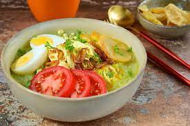

Rawon adalah masakan Indonesia berasal dari Ponorogo yang berupa sup daging berkuah hitam dengan campuran bumbu khas yang menggunakan kluwek. Rawon, Menyebar keluar Ponorogo karena Ponorogo memiliki peran Penting dari masa ke masa, hingga dikenal sebagai masakan khas Jawa Timur
Mi Aceh adalah masakan mi pedas khas Aceh di Indonesia. Mi kuning tebal dengan irisan daging sapi, daging kambing atau makanan laut disajikan dalam sup sejenis kari yang gurih dan pedas. Mi aceh biasanya ditaburi dengan bawang goreng dan disajikan bersama emping, potongan bawang merah, mentimun, dan jeruk nipis.
Gudeg (Jawa: ꦒꦸꦝꦼꦒ꧀, translit. Gudhěg) adalah hidangan khas Provinsi Daerah Istimewa Yogyakarta yang terbuat dari nangka muda yang dimasak dengan santan. Perlu waktu berjam-jam untuk membuat hidangan ini. Warna cokelat biasanya dihasilkan oleh daun jati yang dimasak bersamaan. Gudeg biasanya dimakan dengan nasi dan disajikan dengan kuah santan kental (areh), ayam kampung, telur, tempe, tahu, dan sambal goreng krecek.
Soto Ayam adalah makanan khas Indonesia yang berupa sejenis sup ayam dengan kuah yang berwarna kekuningan. Warna kuning ini dikarenakan oleh kunyit yang digunakan sebagai bumbu. Soto ayam banyak ditemukan di daerah-daerah di Indonesia dan Singapura.
Gulai Kambing adalah sebuah hidangan Indonesia tradisional berbahan utama daging domba atau kambing yang dimasak dengan saus mirip kari pedas dan berwarna kekuningan bernama gulai. Hidangan tersebut berasal dari Sumatra Barat. Hidangan tersebut dapat diklasifikasikan sebagai kari Indonesia.